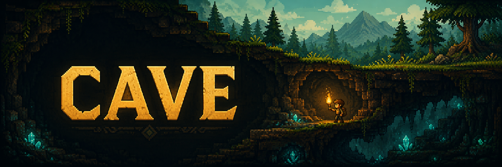
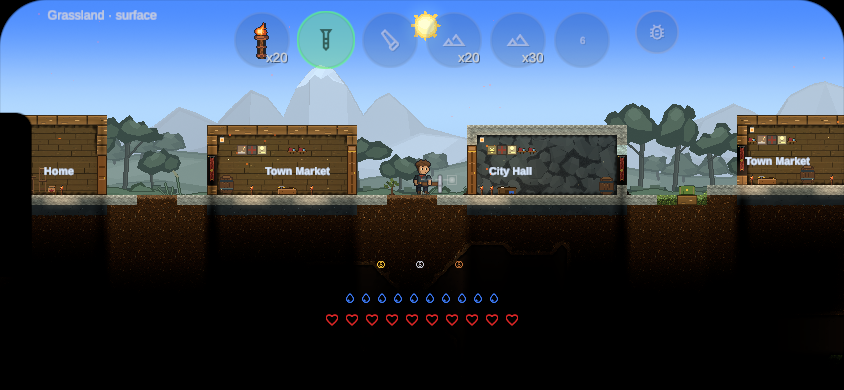
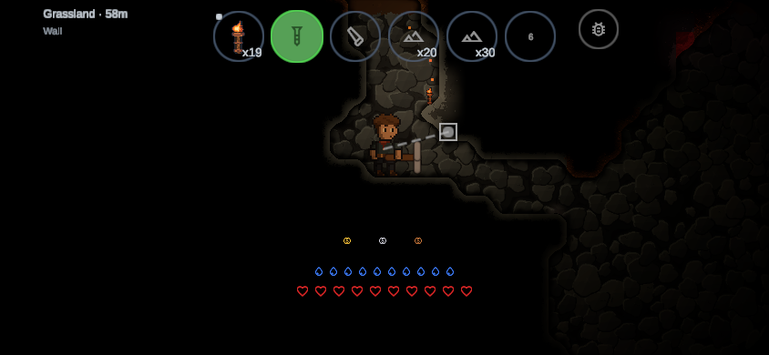
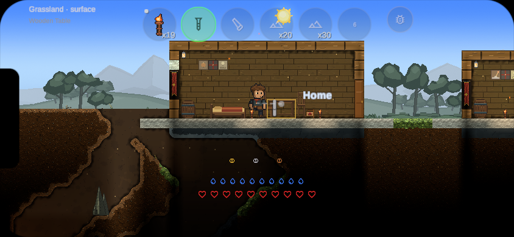

EARLY BUILD · 0.1.3
A world
worth digging into.
Explore a procedural 2D world. Dig, build, and see what lies beneath.
An early Android build for friends to try. Phone compatibility and gameplay are still being tested.
INSIDE CAVE
From the game.
Fresh gameplay captures using iPhone landscape simulation on desktop. These are not phone captures; Android appearance may vary. Select an image to view it full size.
{kind=link}

Beyond the treeline
Forests, settlements, and the world beneath your feet.
iPhone landscape simulation{kind=link}

A little light goes a long way
Torchlight reveals the stone around you as you head underground.
iPhone landscape simulation{kind=link}

Make room for your ideas
Furnish a space of your own, above or below the surface.
iPhone landscape simulationGET STARTED
On your phone in three steps.
Download
Open this page on your Android phone and tap Download APK.
Allow installation
Open the downloaded file. If Android asks, allow your browser to install unknown apps. This is a direct download, outside Google Play.
Install & explore
Tap Install, then open Cave. You can turn off your browser’s installation permission afterward.
Already installed the old test build?
The original debug-signed prototype must be uninstalled before installing this release. Uninstalling deletes its local saves. Future release updates use the same signing key.
Verify your download
SHA-256 of cave-android.apk:
650cf615f490ee2133b97a98c6a084203efb657488a5fa957a17af092d400f45Download checksum